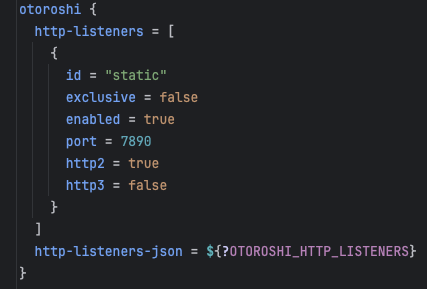
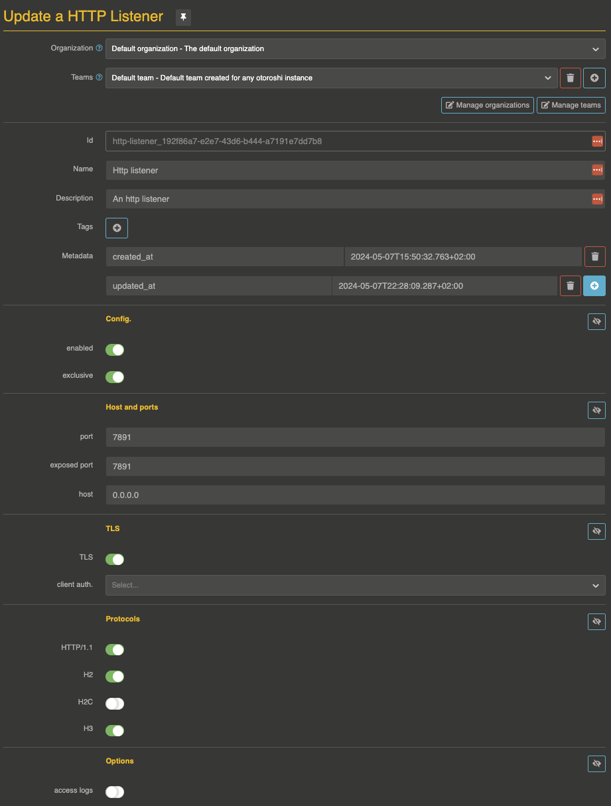
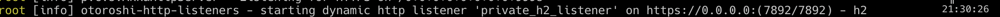
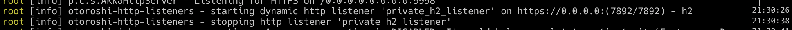

Custom HTTP Listeners
Starting from v16.18.0, Otoroshi supports custom HTTP listeners. This feature lets you run additional HTTP listeners on any port, with the protocols and TLS settings you want. Listeners can be defined statically from the configuration file or dynamically via the admin API.
Each listener runs an independent Netty server and is fully capable of routing traffic like the standard Otoroshi listener. Additionally, listeners can scope traffic to specific routes or plugins using the bound_listeners mechanism, enabling powerful multi-port deployment patterns.
Listener configuration
The configuration of an HTTP listener uses the following properties:
| Property | Type | Default | Description |
|---|---|---|---|
enabled |
boolean | true |
Whether the listener is active |
exclusive |
boolean | false |
When true, the listener only serves routes explicitly bound to it. See exclusive listeners |
tls |
boolean | true |
Enable TLS (HTTPS). When false, the listener uses plain HTTP |
http1 |
boolean | true |
Enable HTTP/1.1 protocol support |
http2 |
boolean | true |
Enable HTTP/2 protocol support (ALPN negotiation over TLS) |
h2c |
boolean | false |
Enable HTTP/2 Cleartext (HTTP/2 without TLS, for internal networks) |
http3 |
boolean | false |
Enable HTTP/3 (QUIC). Requires tls: true. Runs on a separate UDP socket on the same port |
port |
number | 7890 |
The port the listener binds to |
exposedPort |
number | same as port |
The externally visible port (useful behind load balancers, proxies, or in containers) |
host |
string | 0.0.0.0 |
The network interface the listener binds to. Use 0.0.0.0 for all interfaces or 127.0.0.1 for localhost only |
accessLog |
boolean | false |
Enable access logging for this listener |
clientAuth |
string | None |
mTLS client authentication mode: None, Want (optional), or Need (required) |
JSON example
{
"enabled": true,
"exclusive": false,
"tls": true,
"http1": true,
"http2": true,
"h2c": false,
"http3": false,
"port": 7890,
"exposedPort": 7890,
"host": "0.0.0.0",
"accessLog": false,
"clientAuth": "None"
}
Exclusive listeners
An exclusive listener (marked with exclusive: true) only serves routes that are explicitly bound to it. Routes without a bound_listeners entry will never be served on an exclusive listener.
This is useful for:
- Private APIs: expose internal routes on a separate port that is only accessible from a private network
- Protocol isolation: run a dedicated listener for specific protocols (e.g., gRPC over H2)
- Security boundaries: enforce different TLS or mTLS settings per listener
When a listener is not exclusive (the default), it serves:
- All routes that are explicitly bound to it
- All routes that have no
bound_listeners(i.e., routes available on any listener)
Static HTTP listeners
You can define HTTP listeners directly in the Otoroshi configuration file. They start at boot time as soon as the admin extensions are initialized.
Add listener configurations under otoroshi.admin-extensions.configurations.otoroshi_extensions_httplisteners.listeners:
otoroshi {
admin-extensions {
configurations {
otoroshi_extensions_httplisteners {
listeners = [
{
id = "internal-api"
enabled = true
exclusive = true
tls = true
http1 = true
http2 = true
port = 9443
exposedPort = 9443
host = "0.0.0.0"
clientAuth = "Need"
},
{
id = "public-h3"
enabled = true
exclusive = false
tls = true
http1 = true
http2 = true
http3 = true
port = 8443
exposedPort = 443
}
]
}
}
}
}
You can also provide the configuration as a JSON string using listeners_json, or set the OTOROSHI_HTTP_LISTENERS environment variable with a JSON array.
Static listeners must have an id field so that routes and plugins can reference them via bound_listeners.

Dynamic HTTP listeners
Dynamic listeners are managed through the admin API or the back-office UI. They are created, updated, and deleted at runtime without restarting Otoroshi.

Lifecycle
- Create: as soon as a new
HttpListenerentity is created, the corresponding Netty server starts - Update: if the configuration changes, the listener is stopped and restarted with the new settings
- Disable: setting
enabled: falsestops the listener without deleting the entity - Delete: deleting the entity stops the listener and removes it
Example: create an H2-only exclusive listener
curl -X POST 'http://otoroshi-api.oto.tools:8080/apis/http-listeners.proxy.otoroshi.io/v1/http-listeners' \
-H 'Content-Type: application/json' \
-u admin-api-apikey-id:admin-api-apikey-secret \
-d '{
"id": "private_h2_listener",
"name": "Private H2 Listener",
"description": "H2-only exclusive listener for internal gRPC services",
"tags": ["internal"],
"metadata": {},
"config": {
"enabled": true,
"exclusive": true,
"tls": true,
"http1": false,
"http2": true,
"h2c": false,
"http3": false,
"port": 7892,
"exposedPort": 7892,
"host": "0.0.0.0",
"accessLog": true,
"clientAuth": "None"
}
}'
A few seconds later, a log entry will appear:

Example: disable a listener
curl -X PATCH 'http://otoroshi-api.oto.tools:8080/apis/http-listeners.proxy.otoroshi.io/v1/http-listeners/private_h2_listener' \
-H 'Content-Type: application/json' \
-u admin-api-apikey-id:admin-api-apikey-secret \
-d '[{"op": "replace", "path": "/config/enabled", "value": false}]'

Example: delete a listener
curl -X DELETE 'http://otoroshi-api.oto.tools:8080/apis/http-listeners.proxy.otoroshi.io/v1/http-listeners/private_h2_listener' \
-u admin-api-apikey-id:admin-api-apikey-secret
Bind a route to a specific HTTP listener
Routes have a bound_listeners property (array of listener IDs). When a route is bound to one or more listeners, it is only accessible on those listeners and no longer served on the standard listener.
For instance, the following route is only accessible from the listener with ID static-1. The standard HTTP listener will not route it:
{
"id": "route_private_api",
"name": "my private api",
"description": "Only accessible on the static-1 listener",
"enabled": true,
"debug_flow": false,
"export_reporting": false,
"capture": false,
"groups": ["default"],
"bound_listeners": ["static-1"],
"frontend": {
"domains": ["myapi.oto.tools"],
"strip_path": true,
"exact": false,
"headers": {},
"query": {},
"methods": []
},
"backend": {
"targets": [
{
"id": "target_1",
"hostname": "internal-service.local",
"port": 8080,
"tls": false,
"weight": 1,
"protocol": "HTTP/1.1"
}
],
"root": "",
"rewrite": false,
"load_balancing": { "type": "RoundRobin" }
},
"backend_ref": null,
"plugins": []
}
Bind a plugin to a specific HTTP listener
For more granular control, individual plugins within a route can also be bound to specific listeners using the bound_listeners property on each plugin slot. This allows a route to be accessible on all listeners but apply certain plugins only on specific ones.
In the following example, the ApikeyCalls plugin is only applied when the request comes through the static-1 listener. The OverrideHost plugin runs on all listeners:
{
"id": "route_selective_plugins",
"name": "my api with selective auth",
"description": "API key required only on the static-1 listener",
"enabled": true,
"debug_flow": false,
"export_reporting": false,
"capture": false,
"groups": ["default"],
"bound_listeners": [],
"frontend": {
"domains": ["myapi.oto.tools"],
"strip_path": true,
"exact": false,
"headers": {},
"query": {},
"methods": []
},
"backend": {
"targets": [
{
"id": "target_1",
"hostname": "request.otoroshi.io",
"port": 443,
"tls": true,
"weight": 1,
"protocol": "HTTP/1.1"
}
],
"root": "",
"rewrite": false,
"load_balancing": { "type": "RoundRobin" }
},
"backend_ref": null,
"plugins": [
{
"enabled": true,
"debug": false,
"plugin": "cp:otoroshi.next.plugins.ApikeyCalls",
"include": [],
"exclude": [],
"config": {},
"bound_listeners": ["static-1"],
"plugin_index": {
"validate_access": 0,
"transform_request": 0,
"match_route": 0
}
},
{
"enabled": true,
"debug": false,
"plugin": "cp:otoroshi.next.plugins.OverrideHost",
"include": [],
"exclude": [],
"config": {},
"bound_listeners": [],
"plugin_index": {
"transform_request": 1
}
}
]
}
Protocol support details
HTTP/1.1
Enabled by default. Standard HTTP/1.1 with keep-alive, chunked transfer encoding, and pipelining.
HTTP/2
Enabled by default over TLS via ALPN negotiation. Provides multiplexed streams, header compression (HPACK), and server push capabilities. When h2c is enabled, HTTP/2 cleartext is also available without TLS (useful for internal service-to-service communication).
HTTP/3
HTTP/3 runs over the QUIC protocol (UDP). It requires TLS to be enabled (tls: true). When activated, Otoroshi starts a separate UDP socket on the same port. HTTP/3 provides faster connection establishment (0-RTT), better handling of packet loss, and connection migration.
TLS and mTLS
Each listener manages its own TLS context with:
- Dynamic certificate selection: Otoroshi automatically selects the right certificate based on SNI (Server Name Indication)
- Independent mTLS settings: each listener can have different
clientAuthsettings (None,Want,Need) - Shared cipher suites and TLS protocols: inherited from the global Otoroshi TLS configuration (
otoroshi.ssl.cipherSuitesandotoroshi.ssl.protocols)
Routing behavior summary
The following table summarizes how routes are matched depending on the listener type and the route’s bound_listeners configuration:
| Listener type | Route bound_listeners |
Served? |
|---|---|---|
| Standard | empty | Yes |
| Standard | ["listener-a"] |
No |
| Non-exclusive custom | empty | Yes |
Non-exclusive custom (listener-a) |
["listener-a"] |
Yes |
Non-exclusive custom (listener-a) |
["listener-b"] |
No |
Exclusive (listener-a) |
empty | No |
Exclusive (listener-a) |
["listener-a"] |
Yes |
Exclusive (listener-a) |
["listener-b"] |
No |
Use cases
- Internal/external separation: run an exclusive listener on a private port (e.g.,
9443) for admin and internal APIs, while the standard listener serves public traffic - Protocol specialization: dedicate a listener with
http1: falsefor gRPC or HTTP/2-only services - mTLS enforcement: run a listener with
clientAuth: Needfor partner integrations that require mutual TLS, without affecting other routes - Multi-port deployment: serve admin UI, public API, and webhooks on different ports from the same Otoroshi instance
- Selective access logging: enable
accessLogonly on listeners that handle sensitive traffic - HTTP/3 migration: run an HTTP/3 listener alongside HTTP/1.1+HTTP/2 for gradual client adoption
Admin API
GET /apis/http-listeners.proxy.otoroshi.io/v1/http-listeners # List all listeners
POST /apis/http-listeners.proxy.otoroshi.io/v1/http-listeners # Create a listener
GET /apis/http-listeners.proxy.otoroshi.io/v1/http-listeners/:id # Get a listener
PUT /apis/http-listeners.proxy.otoroshi.io/v1/http-listeners/:id # Update a listener
PATCH /apis/http-listeners.proxy.otoroshi.io/v1/http-listeners/:id # Partially update a listener
DELETE /apis/http-listeners.proxy.otoroshi.io/v1/http-listeners/:id # Delete a listener
GET /apis/http-listeners.proxy.otoroshi.io/v1/http-listeners/_count # Count listeners
GET /apis/http-listeners.proxy.otoroshi.io/v1/http-listeners/_template # Get a listener template
POST /apis/http-listeners.proxy.otoroshi.io/v1/http-listeners/_bulk # Bulk create
PUT /apis/http-listeners.proxy.otoroshi.io/v1/http-listeners/_bulk # Bulk update
PATCH /apis/http-listeners.proxy.otoroshi.io/v1/http-listeners/_bulk # Bulk patch
DELETE /apis/http-listeners.proxy.otoroshi.io/v1/http-listeners/_bulk # Bulk delete
Related
- HTTP Listeners entity - Entity reference documentation
- Routes - Route configuration including
bound_listeners